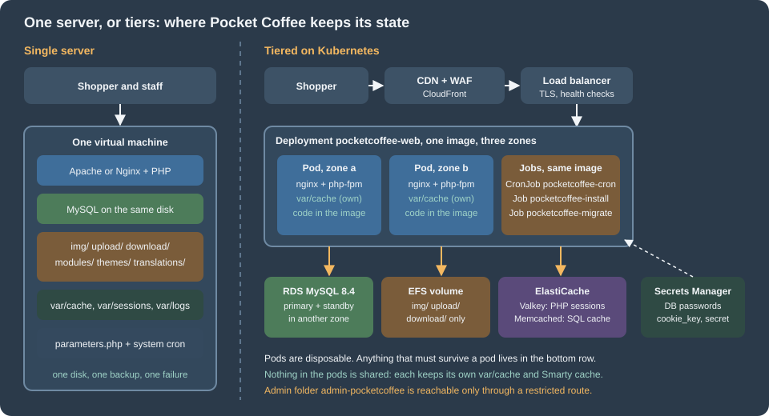
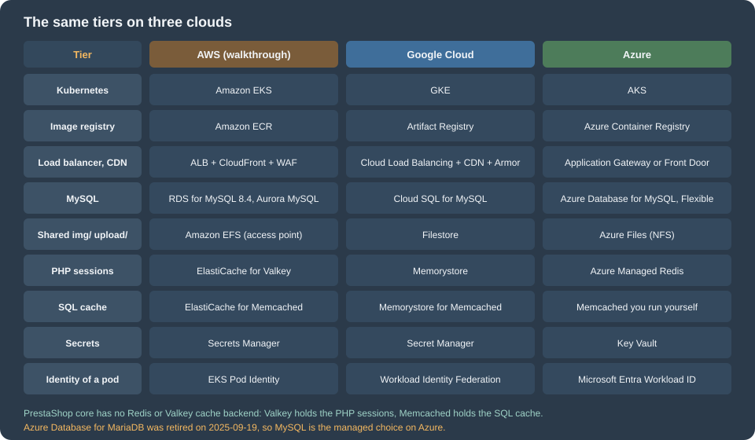

Cloud: Reference Architecture
|
This content was generated with the assistance of AI and should be verified against the official documentation before being relied on in production. |
This page was written against PrestaShop 9.2.0 (released 2026-09-30; 9.1.5 and 8.2.8 are the maintenance lines), the official
prestashop/prestashop Docker image and its source repository PrestaShop/docker, MySQL 8.4 on Amazon RDS and Kubernetes 1.36
or 1.37 on Amazon EKS (both available on the check date), and checked on 2026-10-29. It is the first of ten pages on running
a PrestaShop shop on a cluster and the map for the other nine. It names no prices: sizes are starting points to measure on
your own traffic.
A PrestaShop shop is a PHP application written for one server: it writes product images, uploaded files, compiled caches,
sessions and logs into its own folder, it reads its database password from a file in that folder, and its back office installs
modules and changes the code at runtime. Performance and Caching tunes
that one server and Installation and Local Environments
installs it, including a Docker Compose stack that is a good development setup. This page and the next nine take the same shop
to a public cloud: which managed service replaces each part of the single server, where each piece of state goes, and where the
details are. The running example is Pocket Coffee, the fictitious specialty-coffee shop of this section, moving
www.pocketcoffee.example from one virtual machine to an Amazon EKS cluster in eu-west-1. Shared cloud fundamentals are
linked, not repeated: VPC Networking, EKS Clusters,
Amazon RDS and the rest of the AWS section, and for the cluster itself
Kubernetes.
Two architectures

The single server is the architecture of most PrestaShop shops and, for many, the right one. One machine runs the web server, PHP, MySQL, the cron entry and the files. Everything is local, so everything is fast and simple: one place to back up, one log to read, no network between PHP and MySQL. Its limit is the machine. A failed disk, a bad kernel update or a noisy neighbour takes the shop down during the hours it earns money, and the recovery is a restore from a backup that is only as fresh as the last copy. Vertical scaling postpones the problem but never removes it.
The tiered architecture separates compute from state. The web tier is a set of identical, disposable pods built from one container image with the code, the modules and the theme inside. They hold nothing worth keeping, so Kubernetes can add, remove, replace and spread them over availability zones at any time. Everything that must survive moves to a service that its provider replicates: the MySQL database, the shared volume for product images and uploads, the session store, the SQL cache and the secrets. One scheduler runs the cron, and schema changes run in a Job before a rollout.
What the tiered design buys, and what it costs:
| Single server | Tiered on Kubernetes | |
|---|---|---|
Availability |
One host; recovery means restore or rebuild |
Pods in several zones, a managed database with a standby, a load balancer that removes failed pods |
Capacity |
The largest machine you will buy |
Pods added by an autoscaler; the database remains one writer |
Deployments |
Copy files, or update from the back office or the autoupgrade module |
A new image, a rolling update and a rollback, with schema changes in a Job before the rollout |
Module and theme changes |
From the back office (Module Manager, theme import) |
Through the image and a pipeline; the back office must not change code in production |
Moving parts |
One |
A cluster, a registry, a database, a file volume, two caches, a secret store, a CDN, a pipeline |
What can go wrong |
The host |
Misconfiguration between the parts, and the cost of operating them |
Skills |
A systems administrator |
Kubernetes, a cloud, infrastructure as code and a delivery pipeline |
The honest summary is that the tiered design trades simplicity for availability and capacity. The last section of this page says when not to make that trade.
The request path
Following one request for an HTML page of the shop:
-
The shopper resolves
www.pocketcoffee.exampleto CloudFront. The CDN serves static assets and product images from its cache; HTML, the cart, the checkout, the customer account,/admin-pocketcoffee/and webservice calls always go to the origin. The rules are in Performance and Caching, and the shop-specific ones, especially for the checkout, are on the later pages. -
The load balancer terminates TLS and adds
X-Forwarded-ProtoandX-Forwarded-For. PrestaShop must be told to trust it. The legacy code readsHTTP_X_FORWARDED_PROTOinTools::usingSecureMode()when noHTTPSvariable is set, and the Symfony part of the back office reads the environment variablePS_TRUSTED_PROXIES(empty by default); a shop that is switched to HTTPS with a load balancer in front and has neither fixed hits an "Infinite redirection detected" exception inSSLMiddlewareListener. The setting is on Cloud: EKS Infrastructure and Helm Deployment. -
nginx in the pod serves static files and hands PHP to
php-fpmover FastCGI on the pod’s loopback address. Two containers in one pod keep the pair together and let them scale as a unit. The official image runs Apache withmod_phpby default; the-fpmtags are what this section uses. -
PHP runs PrestaShop. It reads its configuration from
app/config/parameters.php, a file of the image that takes its values from environment variables, looks up the shop inps_shop_url, optionally asks the SQL cache (Memcached) before the database, and keeps the PHP session in Valkey. See Cloud: Cache, Sessions and the Back Office in a Cluster. -
The database is a managed primary with a synchronous standby in another zone, reached by a dedicated user (over TLS only if the image carries the override of the database page, because PrestaShop’s own database client cannot ask for it). See Cloud: Managed Database (RDS and Aurora).
-
Product and category images and uploads are read from and written to a shared volume that every pod mounts. See Cloud: Shared Media and Writable Paths.
-
The response goes back and the CDN stores it only if the cache rules allow it. The pod learns its secrets from environment variables that the cluster fills when it starts; it has no file to edit.
Where each piece of PrestaShop state goes
On one server PrestaShop keeps state in many places and nothing lists them. Moving to a cluster is mostly the work of finding every one and deciding where it goes. This table is the checklist for the whole section; the rows that need a procedure are completed on the page named in the last column. "Per pod" means that each pod keeps its own copy and loses it with the pod, which is correct for caches and wrong for anything else.
| State | On one server | In the tiered design | Page |
|---|---|---|---|
Code: core, modules, themes |
|
Inside the container image built in the pipeline. Modules and themes are installed at build time and never from the back office in production; an update is a new image |
Cloud: Production Container Image, Cloud: Releases and Upgrades |
Configuration: |
A file written by the installer, with the database password, |
A file in the image that only reads environment variables (the keys come from Secrets Manager and are identical on every pod). The shop domain is not in this file: it is in |
|
Database content |
MySQL or MariaDB on the same host |
A managed database with a standby: RDS or Aurora, reached by an application user and a separate migration user; PrestaShop’s own database client sets no TLS options, so encryption needs the override of the database page |
|
Media and uploads: |
The shop folder on the local disk |
A shared volume mounted on every pod (EFS, ReadWriteMany). PrestaShop core has no S3 option; the CDN in front serves the files, and the media-server settings ( |
|
Front-office and back-office login |
An encrypted cookie ( |
The cookie keys identical on every pod and never regenerated; the PHP session handler in a shared Valkey, because |
|
Symfony and Smarty cache: |
On disk, rebuilt on demand; a back-office "Clear cache" clears it |
Per pod, on local disk (an |
|
SQL cache ( |
Off, or APCu on the same host |
Off, or Memcached on ElastiCache ( |
|
Page cache |
None in core; a module, or Varnish |
At the CDN, for static files only. HTML of the cart, checkout and account is never cached |
|
Search |
The database (the Search module and |
The same, from the managed database. A search service is a separate tier that needs a module |
|
Scheduled work |
A system cron calling a module’s cron URL or a |
One Kubernetes CronJob with |
|
Schema upgrades |
The installer, the autoupgrade module or |
A Job ( |
|
Outgoing email |
The server’s mail transport, or SMTP |
An email service through SMTP; pods do not run a mail server |
|
Logs: |
Files, one per day and environment, never purged by PrestaShop |
Standard output and error of the containers, collected by the cluster; the |
Monitoring and Observability, Cloud: Autoscaling, Observability, Backups and Security |
Backups |
Scripts on the server |
Database snapshots and point-in-time recovery, backups of the shared volume, the image registry and the infrastructure code |
|
TLS certificates |
Let’s Encrypt or a purchased certificate on the server |
Certificates managed by the cloud (ACM) on the load balancer and the CDN |
Four rows deserve a sentence more.
Configuration is the row people forget. parameters.php is generated at install time and holds the database
credentials and three keys, and the installer writes them for one server. In a cluster the same file is part of the image and reads
environment variables that are filled from Secrets Manager when the pod starts, and the keys inside it, secret, cookie_key, cookie_iv and new_cookie_key when it is used, must be
the same on every pod and across releases. A pod that starts with a freshly generated cookie_key cannot read the cookies
that another pod issued, and anything PrestaShop encrypted with the old key (saved payment data of some modules, for
example) cannot be decrypted. The domain lives somewhere else: PrestaShop finds its shop by the host name of the request, in
the table ps_shop_url, and builds absolute URLs from there and from ps_configuration. Changing the public host name, or
importing a database made for another host, means changing those rows; see
Installation and Local Environments, section "Moving a shop to another server or changing its domain".
Sessions surprise people who know WordPress. PrestaShop does have PHP sessions: the Symfony back office uses PHP’s native session handler, whose files go to the pod’s disk, and a second layer, the encrypted cookie, holds the login state of shoppers and employees with a pointer to a row in the database. The cookie layer needs only identical keys. The PHP session needs a shared handler or the employee is logged out whenever the load balancer sends the next request to another pod.
Caches are the row that most often goes wrong in the other direction: the instinct is to share everything. The Symfony container, the routes, the Twig templates and the Smarty compile directory are compiled output of the code, not data. They are best built once, when the image is built, and kept per pod. Sharing them on a network volume makes every rebuild a bottleneck and every pod depend on it; see the rules in Performance and Caching, section "Symfony cache, containers and logs". The consequence is the one in the table: in production the back-office button that clears the cache, and the module and theme installers that clear it after they run, act on one pod only.
Code is the row that changes how the team works. In the tiered design nobody installs a module from the back office. The module is added to the repository, built into an image, tested on staging and rolled out. That is a loss of convenience for the shop owner and a gain in repeatability, rollback and security. Modules that write PHP files at runtime, or create override files, fight the model; see Module Upgrades, Overrides and Decoration for how overrides are generated.
The tiers on three clouds

The architecture does not depend on one provider. Each tier has a managed equivalent on the three large clouds. The walkthroughs of the next pages use AWS; Cloud: Google Cloud, Azure and Alternatives gives the differing commands for the others.
| Tier | AWS | Google Cloud | Azure |
|---|---|---|---|
Managed Kubernetes |
Amazon EKS (Auto Mode, or managed node groups with Karpenter) |
GKE (Autopilot or Standard) |
|
Container registry |
|||
Load balancer and edge routing |
Application Load Balancer through the AWS Load Balancer Controller |
||
CDN |
|||
Web application firewall |
AWS WAF |
Cloud Armor |
Web Application Firewall on Front Door or Application Gateway |
DNS and certificates |
Azure DNS and managed certificates |
||
Managed database (MySQL) |
Azure Database for MySQL Flexible Server. Azure Database for MariaDB was retired on 2025-09-19 |
||
PHP sessions |
|||
SQL cache ( |
ElastiCache for Memcached |
Memorystore for Memcached |
No managed Memcached service: run Memcached in the cluster, or leave the SQL cache off |
Shared volume for |
Azure Files (NFS), see Storage Accounts |
||
Secrets |
|||
Identity for pods |
EKS Pod Identity or IAM roles for service accounts |
Workload Identity Federation for GKE |
Microsoft Entra Workload ID |
Logs and metrics |
|||
Infrastructure as code |
Two rows differ from the WordPress and Magento mappings and are worth reading twice. There is no object storage row: PrestaShop
core has no S3 filesystem option (a search of the 9.2.0 source finds none), so the media tier is a shared file volume, with
the CDN in front. And there are two cache rows instead of one, because core has exactly four SQL-cache backends
(CacheApc, CacheMemcache, CacheMemcached and CacheXcache in classes/cache/) and none of them speaks to Redis or
Valkey; the session store and the SQL cache are therefore different services. Whether the SQL cache is worth running at all
is a measurement, not a given: see the measurements in
Performance and Caching.
The Kubernetes layer has its own section, Kubernetes; the cloud pages above cover the managed services. The PrestaShop-specific parts that no cloud page covers are the other nine pages here.
What the official image does, and what it does not
The prestashop/prestashop image (source repository PrestaShop/docker) is the obvious starting point, and it is a good
base, but it is built for "run a PrestaShop quickly", not for "run a PrestaShop on a cluster". The details of its entrypoint and
its environment variables are in
Installation and Local Environments; what matters for production is this:
| Topic | What the image does | What a production deployment still has to do |
|---|---|---|
Contents |
PHP (with OPcache, |
Run MySQL as a managed service. Add nginx as a second container for the |
First start |
The entrypoint copies the shop into |
In a cluster, install once, from a Job, never from every pod that starts. Replicas must start with an installed shop and a finished |
Shop files |
The code is copied to |
Bake the shop into the image at build time and make the root file system read-only except for the paths on the next pages |
Configuration |
|
A file of the image that reads secrets from the environment, identical on every pod, never regenerated by a pod |
Admin folder |
The installer renames the folder to a random name on every installation; the custom name through |
Rename at build, to |
Modules and themes |
Those of the release; the back office can install more |
Add them at build time; the back office does not change code |
PHP extensions |
None for Redis, Valkey or Memcached were found in the 9.2 image that was inspected (see the commands below) |
Install the extension you need for sessions ( |
Sessions and caches |
PHP’s default file sessions and the per-container caches |
Shared sessions and a deliberately per-pod cache, as in the state table |
Cron |
None |
A CronJob |
Process model |
One process per container, with Apache or FPM as the main process |
Run |
The extension list of the image you build on is a fact to check, not to remember, because the tags change. These commands
print what the image contains and what a shop needs to share. They were run on 2026-10-29 against the locally pulled
prestashop/prestashop:9.2 image:
docker run --rm --entrypoint php prestashop/prestashop:9.2 -m | grep -i -E 'redis|memcache|apcu|opcache|pdo_mysql'
docker run --rm --entrypoint php prestashop/prestashop:9.2 -i | grep -E '^session.save_handler|^opcache.validate_timestamps'
docker run --rm --entrypoint ls prestashop/prestashop:9.2 /var/www/html/varOn that image the first command printed only pdo_mysql and Zend OPcache (no Redis, Memcache or APCu extension),
the second printed session.save_handler => files and opcache.validate_timestamps => On, and the third listed cache,
logs, modules and sessions under var/. Each of these is something the production image changes: the extensions
are added, the save handler becomes redis, OPcache stops checking timestamps because the code never changes under a running
pod, and the folders of var/ are made writable on purpose. The Dockerfile that does it is on
Cloud: Production Container Image. The tag used as a base is
prestashop/prestashop:9.2.0-fpm; the tags 9.2.0, 9.2.0-apache and 9.2.0-fpm exist on Docker Hub, and the pattern
9.2.0-8.x-fpm does not (see Versions and Support, section "Choosing a Docker tag").
The names used across these pages
The ten PrestaShop cloud pages use one set of names, so a snippet on one page connects to the others. The shop is the
Pocket Coffee shop of the rest of this section, with the module prefix pocketcoffee_* used in the module pages.
| Item | Name |
|---|---|
Region and account |
|
Site and media hosts |
|
EKS cluster and namespace |
|
Helm release and chart |
release |
Image |
ECR repository |
Modules |
|
Admin folder |
renamed at build to |
Workloads |
Deployment |
Database |
RDS instance |
Secrets |
Secrets Manager |
Shared files |
PersistentVolumeClaim |
Caches |
ElastiCache clusters |
Infrastructure code |
OpenTofu module in the directory |
Values keys |
|
The tags 9.2.0, 9.2.0-apache and 9.2.0-fpm of prestashop/prestashop and the tag nginx:1.29 existed on Docker Hub on the
check date (the manifests were inspected with docker manifest inspect). Confirm them with docker pull when you build.
Every name is fictitious: there is no such account, cluster or domain, and the .example domain is reserved for documentation.
The end of the Bitnami images
Many older tutorials start a PrestaShop cluster from a Bitnami image, a Bitnami Helm chart, a Bitnami PrestaShop stack on a marketplace image or a Lightsail blueprint, because they came with sensible defaults. That path changed:
-
In August 2025 Broadcom moved the public Bitnami container images to a "Bitnami Legacy" repository that receives no updates, and moved the maintained images to a paid catalogue; new OCI Helm charts stopped being published on Docker Hub.
-
Broadcom’s announcement of 2026-05-20 says that on 2026-06-10 the Bitnami containers on Amazon ECR, the Helm charts, the AMIs on AWS Marketplace and the Lightsail blueprints are removed from AWS. Existing EC2 and Lightsail instances keep running but get no updates after 2026-05-20.
-
The source repositories (
bitnami/charts,bitnami/containers) are still public, but they no longer contain a PrestaShop chart (the PrestaShop directory is gone), and the published images and charts are not a safe default for production: nothing guarantees updates.
The consequence for this section: build your own image from the official prestashop/prestashop image, use managed
services for the database and the caches instead of in-cluster charts, and treat a Bitnami or Lightsail PrestaShop
instance as a system to migrate off, not one to patch. The migration is on
Cloud: Migrating from a Single Server. The Bitnami change
is a Broadcom commercial decision announced on their sites; verify the current status there before relying on any image.
When one server, or managed hosting, is still right
The tiered architecture is the answer to specific requirements, not a goal. Stay with a single server, or buy managed PrestaShop hosting, when:
-
Traffic is modest. A CDN for static files and a well-tuned server (OPcache, the Smarty and Symfony caches warm, the SQL cache measured, a database with enough memory) serve a large catalogue. The tuning of Performance and Caching comes first, a database on its own server next, and several web servers last.
-
A few minutes of downtime is acceptable and the backup and the restore are tested. A one-hour recovery objective can be met with snapshots and a rebuild script, with none of the cluster.
-
No team operates Kubernetes. A cluster that nobody understands is less available than a virtual machine that somebody does. Operating it (a Kubernetes upgrade every year, node and add-on patching, cost control, on-call) is the real price.
-
The shop depends on the back office changing code. A shop whose modules are installed and updated by the owner from the back office, or whose modules write PHP files and overrides at runtime, fights the immutable-image model.
-
Managed hosting fits. A host that runs PrestaShop and its updates, caching, backups and a CDN removes most of the operations while keeping the shop portable. Check how it handles staging, shell access, cron, custom modules and the exit (a database dump and a file archive you can restore elsewhere), and the PrestaShop version and support policy of Versions and Support.
Between the extremes there are middle paths that do not need Kubernetes: a single virtual machine with a managed database
and a CDN (the first two steps of the tiered design), an EC2 Auto Scaling group behind a load balancer with a shared file
volume, or containers on ECS with Fargate. Cloud: Google Cloud, Azure and Alternatives
compares them. A managed database is often the best single step: it removes the failure that is hardest to recover from and
changes only the database settings of parameters.php.
Reading path
-
This page, then Cloud: Managed Database (RDS and Aurora) and Cloud: Shared Media and Writable Paths: the two stores.
-
Cloud: Production Container Image and Cloud: Cache, Sessions and the Back Office in a Cluster: the image and the rest of the state.
-
Cloud: EKS Infrastructure and Helm Deployment: the build and the first deployment.
-
Cloud: Releases and Upgrades and Cloud: Autoscaling, Observability, Backups and Security: running it.
-
Cloud: Migrating from a Single Server to move an existing shop, and Cloud: Google Cloud, Azure and Alternatives for the other choices.
Pitfalls
-
Moving the database and nothing else. A managed database fixes the data tier, not the web tier. Two web servers still need shared
img/andupload/, identical keys, one cron runner and a shared session store. -
Treating the cluster as a bigger server. Back-office installs, a writable code directory, local images, per-pod sessions and a cache clear from the back office all break, silently, when the pod is replaced or the next request lands elsewhere.
-
Sharing the compiled caches.
var/cacheon a network volume trades a consistency problem for a performance one; build the cache into the image instead. -
Regenerating keys on a new pod. A new
cookie_keylogs everybody out and breaks encrypted values. Keys come from the secret, never from the installer of a replica. -
Running the installer from every replica. The first install is one Job; replicas start from a finished shop.
-
Two sources of truth for the domain. The address is in
ps_shop_url, inps_configurationand in the CDN and load balancer settings; a change in one without the others loops redirects or serves the wrong host. -
Assuming a Redis cache backend. There is none in core; Valkey holds sessions, Memcached holds the SQL cache.
-
Copying a diagram without the cost model. A tier that is not needed is still operated, patched and paid for.